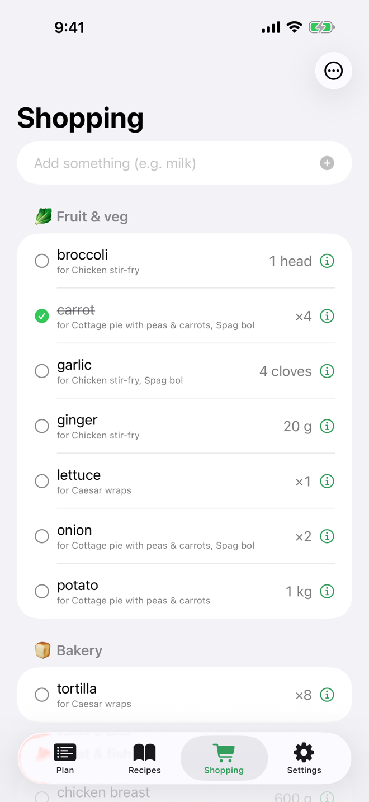

Plans are pools, not calendars
A plan is five dinners you would be happy to cook, in no particular order. No days, no dates, no guilt. A surprise trip breaks nothing, because nothing was ever pinned to Tuesday.
Unfortunately, this one is good.
A recipe library, a pool of dinner options and an aisle-sorted shopping list, running on your server, driven by whichever AI assistant you already talk to. There is no LLM inside. That is the point.
No account with us, because there is no us.
Why another one
Meal planners keep failing the same way: they assume you know what Tuesday looks like. YAMP makes a different set of bets.
A plan is five dinners you would be happy to cook, in no particular order. No days, no dates, no guilt. A surprise trip breaks nothing, because nothing was ever pinned to Tuesday.
Every line remembers which meals put it there. A second recipe that needs carrots merges its share in; dropping a meal takes only its share out, without un-ticking what is already in the trolley. Units merge only on an exact match, so 500 g never quietly becomes half a bag.
Supermarkets eat phone signal. The iPhone app renders from a cached list, queues every tick and quick-add to disk, survives a relaunch, and replays in order once you are back outside. Idempotent client ids mean a replayed action is never a double.
Marking a meal cooked is recorded for good, per recipe as well as per meal, and survives deleting the plan it came from. The library shows "cooked 12×, last May" and sorts by most cooked or not had in a while, which is the actual Sunday question.
Staples check
the boring essentials
Every recipe wants ten millilitres of olive oil, and you almost always have olive oil. Flag it once as a staple and it stops landing on the list every week, along with the rice, the stock cubes and the rest of the things you nearly always have. Nearly: occasionally you do run out. The staples check is one screen that walks the cupboard for you before a shop. Tap the ones you are actually low on and they join the list, already in aisle order. No lap of the kitchen with a notepad, and no discovering mid-recipe that the olive oil ran out last week.
Some ingredients deserve the good version and some honestly do not. Your household records its own verdict per ingredient, premium or budget, with a one-line note on why. Nothing is guessed from a keyword table; it is your accumulated opinion. The verdict rides along to the shelf, on list items and recipe lines, so whoever is doing the shop buys the right bottle. Your AI reads it too, so "plan a cheap week" economises only where you said it could.
Ingredient verdicts
yours, not an algorithm's
Your AI
Everyone else is bolting a chatbot onto their app and renting it back to you monthly. YAMP ships the opposite half: a complete, documented API and the instructions your assistant needs to drive it. Claude, ChatGPT, a local model, whatever you already use: point it at your server and it plans, ingests and shops as you.
YouPlan next week: two of the usuals, the tray bake from this URL, and something we've not had in a while.
Your assistant submit_recipecreate_planget_shopping_list Done. Katsu curry and cottage pie, the harissa tray bake from that page, and lamb kofte, which you last cooked in February. The list is 19 items in shop order; you already had rice and chopped tomatoes.
Shaped like the job, not the database: ingest_recipe, check_off, plan_meals.
/skill and /prompt-pack are served live by your instance, with its own URL already filled in. An assistant learns the whole system from one GET.
Recipe URLs are read from the page's own schema.org data. No model call, cached forever. Only messy pages get handed to your AI.
The prompt pack plus an API token works for any assistant that can make an HTTP request.
Connect your assistant, once
claude mcp add --transport http yamp https://your-server/mcp
connected · 29 tools and it fetches the playbook from /skill by itself.
In the shop
A native iPhone app, offline first, because the shop is where signal goes to die. It renders instantly from local truth and syncs when the world returns.

And for the bigger screen, a web app. Your server serves it itself at /app: plan the week, tidy the recipe library and run the staples check from a laptop, then walk the shop with the phone. Same household, same API, nothing extra to deploy: if the server is up, so is the web app.
Money
The software is complete and AGPL. Nothing in the repo is held back, rate-limited or trial-shaped. Money enters only where real costs live: servers, backups and time.
£0 forever
Not a free tier. The whole thing.
waitlist open
TBA per household, per year
We run the server. You get a URL and your evenings back.
Opens slowly, in order, once the boring parts are provably boring.
£n you pick n
Keep the free thing free.
Run it
Start the whole stack
make up
Postgres and the API on :8000, the web app at /app, the MCP server on :8100, all in Docker.
Give yourself something to look at
make seed
Demo recipes, a plan, a ready-made shopping list, and an API token to hand to an assistant.
No Docker? make run starts the API on SQLite with no services at all. It runs happily on a Pi-class box or the cheapest VPS money rents.
An honest note on demos. YAMP is built and run for one real household first; the reference instance is that family's actual dinner, so registration on it is closed. The demo is make seed on your own machine: recipes, a plan and a ready-made shopping list in under a minute.
Questions
Yes. AGPL-3.0, the whole application. The hosted tier exists because some people would rather pay than run Docker, not because the free one is crippled.
Because the world did not need another meal planner, and yet the existing ones kept planning Tuesdays. The name keeps us honest about what this is: the meal planner you end up writing after the others annoy you.
They are excellent recipe managers with big communities; if you want a recipe wiki, use them happily. YAMP is a planning and shopping tool first: plans without days, a provenance-aware list that works in a basement, and an API designed to be driven by an AI rather than browsed by a human. Run it next to Mealie. It will not be offended.
Anything that speaks MCP connects in one command. Anything that can make an HTTP request works with the prompt pack and a token. The server itself has no LLM and never calls one, so there is no model bill hiding in your grocery list.
Web ships in the box: your server serves the web app itself at /app, same-origin with the API, nothing extra to run. The API is open and documented, and the iPhone and web apps are just two clients of it; an Android client is a pull request we would take seriously, and your AI can already drive everything from any platform today.
Self-hosters: nothing, which is the point. Hosted households: full export at any time, and the exact same software runs at home. The bus factor is documented rather than denied.